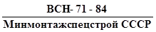
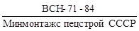
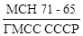
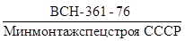
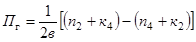
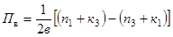
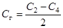
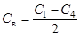

МИНИСТЕРСТВО
МОНТАЖНЫХ И СПЕЦИАЛЬНЫХ
СТРОИТЕЛЬНЫХ РАБОТ СССР
УТВЕРЖДАЮ:
Заместитель
министра
монтажных и специальных
строительных работ СССР
К.К. Липодат
3 октября 1984 г.
ИНСТРУКЦИЯ
ПО МОНТАЖУ СТАЦИОНАРНЫХ ДИЗЕЛЕЙ
И ДИЗЕЛЬНЫХ АГРЕГАТОВ

СОГЛАСОВАНО:
ЦК профсоюза рабочих
строительства и
промышленности строительных
материалов
письмо от 13.09.84 г.
№ 2019-5ПЗ
Центральное бюро
научно-технической информации
Москва - 1985
Инструкция, разработанная Гипронефтеспецмонтажем совместно с трестом Двигательмонтаж, распространяется на монтаж и испытание стационарных дизелей и дизельных агрегатов. Инструкция содержит требования к приемке, монтажу и испытаниям дизелей; содержит последовательность и порядок выполнения всех работ при монтаже дизелей и дизельных агрегатов.
Разработчики: И.С. Гольденберг, М.И.Урицкий, Б.Н. Коган, З.М. Ефанова (Гипронефтеспецмонтаж), Л.М. Гидон, Н.А. Гусаров, Г.И. Ларин (Двигательмонтаж).
|
Министерство монтажных и специальных строительных работ СССР (Минмонтажспецстрой СССР) |
Ведомственные строительные нормы |
 |
|
|
Инструкция по монтажу стационарных дизелей и дизельных агрегатов |
|||
|
Вводится
взамен  |
|
1.1. Настоящая инструкция распространяется на монтаж и испытание стационарных дизелей и дизельных агрегатов* мощностью от 100 кВт и выше. Инструкция не распространяется на монтаж устройств автоматизации дизеля, а также на комплексное испытание дизельных агрегатов при их параллельной работе.
*Далее по тексту "дизели".
1.2. Инструкция содержит требования к приемке, монтажу и испытаниям дизелей.
1.3. Требования настоящей инструкции обязательны для организаций, монтирующих стационарные дизели и должны быть учтены при разработке монтажной технологической документации (проект производства работ (ППР), технологические карты).
1.4. При монтаже и испытании дизеля необходимо руководствоваться настоящей инструкцией, ППР, а также другими действующими нормативными документами, приведенными в приложении 1.
2.1.1. До начала монтажных работ заказчик и генподрядчик должны передать монтажной организации в сроки, установленные "Правилами о договорах подряда на капитальное строительство" и "Положением о взаимоотношениях организаций генеральных подрядчиков с субподрядными организациями" и заключенными между ними договорами, вою необходимую документацию, относящуюся к монтажу дизеля.
|
Внесены |
Утверждены |
Срок введения
в действие |
2.1.2. В составе документации, поставляемой предприятиями-изготовителями вместе с оборудованием и передаваемой заказчиком монтажной организации на время производства монтажных работ, должны быть:
комплект чертежей дизеля, включающий в себя общие виды, основные узлы, габаритные и установочные чертежи;
паспорта (технические формуляры) дизеля и комплектующего его оборудования и приборов;
технические условия на поставку дизеля;
инструкции по монтажу и эксплуатации;
чертежи машинного зала и других помещений, где должно быть смонтировано оборудование;
чертежи фундаментов монтируемого оборудования;
технологические и монтажные схемы систем: топливной, смазки, охлаждения и воздуха.
2.2.1. До начала монтажа дизеля должны быть выполнены общеплощадочные подготовительные работы, предусмотренные проектом организации строительства (ПОС) и ППР, в том числе следующие работы:
общестроительные работы по зданию дизельной установки;
установка и испытание наружных емкостей для топлива, строительство траншеи для трубопроводов топливомаслоснабжения;
прокладка внутренних подземных коммуникаций;
перекрытие каналов, лотков, согласно проекту, устройство колодцев аварийного слива топлива и масла;
прокладка трубопроводов водоснабжения, отопления и сжатого воздуха;
проведение электроосвещения;
устройство черных полов;
прокладка подъездных путей к месту монтажа оборудования.
2.2.2. В машинном зале, а также в помещениях, предназначенных для вспомогательного оборудования дизелей, должны быть отмечены главные оси, а на реперах - абсолютные высотные отметки.
2.2.3. Готовность зданий и сооружений под монтаж дизеля оформляется актом согласно СНиП 3.05.05-84.
2.3.1. Фундамент, на который устанавливается дизель, должен быть выполнен по проекту специализированной организации.
2.3.2. При приемке фундамента под монтаж строительная организация должна предъявить следующие документы:
исполнительную схему с нанесенными проектными и фактическими основными размерами фундамента, с изменениями, допущенными в процессе сооружения фундамента, с указаниями о привязке размеров фундамента к строительным конструкциям и между собой, а также о расположении закладных изделий, анкерных (фундаментных) болтов и колодцев для них;
акты на скрытые работы;
данные испытаний контрольных образцов бетона фундамента, хранившихся в условиях твердения фундамента.
2.3.3. При приемке фундаментов под монтаж необходимо проверить правильность разбивки осей, высотных отметок и расположение закладных изделий, анкерных болтов или колодцев для них.
2.3.4. Главные оси фундамента должны быть зафиксированы на металлических планках или скобах, забетонированных в фундамент, или на скобах, закрепленных на конструкциях здания.
Высотная отметка фундамента должна быть зафиксирована на реперах со сферически обработанной поверхностью, забетонированных в фундамент. Отметки основных реперов относительно контрольных, а вспомогательных относительно основных наносятся с точностью до 0,5 мм, рабочие оси относительно контрольных и вспомогательных относительно основных - с точностью до 1 мм.
2.3.5. Соответствие готового фундамента проектным размерам (правильность геометрических размеров фундамента, колодцев и ниш) проверяется натяжением вдоль основных осей струн (струны по ГОСТ 9389-80) диаметром 0,3 - 0,5 мм. Струны подвешивают на кронштейнах или деревянных подкладках на высоте 150-200 мм от верха фундамента и натягивают грузами (см. табл. 1).
Рис. 1. Проверка геометрических размеров фундамента:
1 - груз; 2 - брусок; 3 - фундамент
Таблица 1
|
0,3 |
0,35 |
0,4 |
0,5 |
|
|
Масса груза, кг, не менее |
8 |
11 |
14 |
22 |
С установленных струн отвесы опускают так, чтобы они попадали в точки пересечения осей фундамента (рис. 1). Отклонение от прямоугольности фундамента проверяют соответственно натяжением струн по диагоналям фундамента и по равенству гипотенуз прямоугольных треугольников, катеты которых откладывают на осях фундамента.
Отклонения действительных высотных отметок и размеров фундамента в плане от проектных согласно СНиП III-15-76 "Бетонные и железобетонные конструкции монолитные. Правила производства и приемки работ" не должны превышать следующих значений, мм:
отклонения плоскостей и линий их пересечения........................................................ ±20
отклонения горизонтальных плоскостей на всю плоскость выверенного участка. ±20
местное отклонение поверхности бетона от проектной отметки при
проверке рейкой длиной 2 м, кроме опорных поверхностей....................................... ±5
в длине или пролете элементов фундамента................................................................ ±20
в отметках опорных поверхностей................................................................................... -5
в расположении анкерных болтов, мм:
в плане внутри контура опоры........................................................................................ ±5
в плане вне контура опоры............................................................................................. ±10
по высоте.......................................................................................................................... ±10
2.3.6. При приемке фундамента необходимо обстукиванием молотком убедиться в отсутствии повреждений, пустот и отслоений. Удаление из колодцев деревянной опалубки путем выжигания не допускается.
2.3.7. Приемка готового фундамента под монтаж оформляется актом в соответствии со СНиП 3.05.05-84.
2.3.8. Дефекты, обнаруженные при приемке фундамента, должны быть устранены строительной организацией до начала монтажа дизеля.
2.4.1. Приемку оборудования в монтаж должны выполнять внешним осмотром представители монтажной организации в присутствии заказчика.
При этом проверяют:
комплектность оборудования по комплектовочной или отгрузочной спецификации;
отсутствие повреждений, поломок, трещин, коррозии и других видимых дефектов оборудования, а также наличие заводских пломб и сохранность окраски;
состояние консервации оборудования.
2.4.2. Передача оборудования в монтаж оформляется актом по форме М-25, утвержденной ЦСУ СССР 14 декабря 1972 г.
3.1.1. Монтаж дизелей должен выполняться в соответствии с ППР или технологическими картами.
3.1.2. Выверку дизеля в плане и по высоте предпочтительно выполнять на временных опорных элементах, удаляемых после твердения подливки. Применение в качестве выверочных приспособлений постоянных опорных элементов (пакетов металлических подкладок) допускается только в случаях технически обоснованных предприятием-изготовителем оборудования.
При выверке
дизелей следует руководствоваться требованиями 
3.1.3. Монтаж дизеля на фундамент необходимо производить по достижении бетоном прочности на сжатие не менее 60% номинальной, что проверяется испытанием контрольных образцов бетона, хранившихся в условиях твердения фундамента, но не ранее чем через 10 суток по окончании заливки фундамента.
3.1.4. На фундаменте необходимо разметить и выровнять площадки под опорные элементы, предназначенные для выверки дизеля.
Отклонение поверхности площадок по горизонтали (уклон) не должно превышать 0,1 мм на 1 м.
3.1.5. Фундаментные болты необходимо очистить от ржавчины, окалины, грязи и промыть растворителем или уайт-спиритом. Смазывать стержни болтов маслами не разрешается. Резьбу фундаментных болтов следует прогнать сквозь гайку и смазать смесью машинного масла с графитовым порошком.
3.1.6. Перед началом монтажа необходимо сверить расположение осей колодцев с фактическим расположением осей отверстий в дизеле. Рекомендуется использовать специально изготовленный шаблон.
3.1.7. При установке, выверке и креплении дизеля необходимо обеспечить:
совмещение в плане осей дизеля с осями фундамента;
требуемый зазор для подливки;
высотную отметку и горизонтальность выверяемого дизеля.
При отсутствии специальных указаний предприятия-изготовителя допускается, мм:
смещение осей дизеля и фундамента в плане..................... ±10
отклонение от проектной высотной отметки..................... ±10
отклонение от горизонтали.......................................... -0,1 мм на 1 м
Горизонтальность необходимо проверять брусковым или рамным уровнем, который устанавливают на обработанную базовую поверхность или контрольную площадку (измерительные инструменты приведены в приложении 2).
3.1.8. Выверку дизелей регулировочными винтами необходимо производить в таком порядке:
установить дизель по осям в плане;
под регулировочные винты уложить опорные пластины;
регулировать дизель по высоте и горизонтальности.
Выверенные дизели должны опираться на все регулировочные винты (проверить щупом толщиной 0,1 мм). Положение винтов фиксируют гайками. Для предотвращения сцепления с бетонной смесью подливки регулировочные винты изолируют бумагой, толью или тонким слоем консистентной смазки (рис. 2).
3.1.9. Выверку дизелей инвентарными домкратами необходимо производить в таком порядке:
на подготовленные площадки установить домкраты, регулировать по высоте с помощью нивелира и рейки;
на домкраты установить дизель по осям в плане;
регулировать по высоте и горизонтальности с помощью домкратов. Выверенные дизели должны опираться на все домкраты. Проверить щупом толщиной 0,1 мм, который по всему периметру прилегания грузовой площадки домкрата не должен заходить на глубину более чем 3 мм;
установить опалубку по периметру фундамента, а также вокруг домкратов (для удаления их после подливки);
подлить бетонной смесью;
снять опалубку через 2-3 суток после подливки;
опустить грузовые площадки домкратов и удалить домкраты;
после удаления домкратов заполнить бетонной смесью ниши.
3.1.10. Выверку дизелей с помощью плоских пакетов или клиновых металлических подкладок необходимо выполнять в нижеприведенной последовательности:
изготовить подкладки и уложить их в пакеты на выровненные площадки фундамента; при этом количество пакетов равно удвоенному числу фундаментных болтов (рис. 3). Количество подкладок в пакете должно быть минимальным и не превышать пяти. Рекомендуемые размеры подкладок (в зависимости от массы оборудования) приведены в табл. 2 согласно ;
установить дизель на пакеты подкладок и проверить по осям в плане;
регулировать по высоте и горизонтальности путем подбора толщины и количества подкладок в пакетах. Пакеты подкладок должны быть размещены на возможно близком расстоянии от фундаментных болтов.
Таблица 2
|
Размеры подкладок, мм |
Материал |
|
|
До 30 |
150´100´30 |
Чугун или сталь |
|
150´100´20 |
Сталь |
|
|
150´100´10 |
" |
|
|
150´100´5 |
" |
|
|
30-100 |
200´100´50 |
Чугун или сталь |
|
200´100´30 |
" |
|
|
200´100´20 |
" |
|
|
Более 100 |
250´120´80 |
Чугун |
|
250´120´60 |
" |
|
|
250´120´40 |
" |
Рис. 2. Узел регулировочного винта:
1 - опорная пластина; 2 - контргайка; 3 - регулировочный винт; 4 - фундаментная рама; 5 - фундаментный болт; 6 - фундамент
Рис. 3. Выверка дизелей с помощью клиновых подкладок:
1 - фундаментная рама; 2 - пакеты клиновых подкладок; 3 - плоская подкладка
Клинья или подкладки должны плотно прилегать друг к другу по всей площади. Допускается прохождение между подкладками щупа толщиной не более 0,05 мм (рис. 4 и 5) на 1/3 длины подкладок, если отсутствуют специальные требования предприятия-изготовителя.
Рис. 4. Схема замера прилегания подкладок при выверке дизеля на плоских подкладках:
1 - фундаментная рама; 2 - пакеты плоских металлических подкладок; 3 - места замеров щупом; 4 - фундаментный болт
Рис. 5. Схема замера прилегания подкладок при выверке дизеля на клиновых подкладках;
1 - фундаментная рама; 2 - плоская подкладка; 3 - пакеты клиновых металлических подкладок; 4 - фундаментный болт; 5 -места замеров щупом
3.1.11. Выверку дизеля по высоте следует производить нивелиром с помощью рейки, установленной на репер, фиксирующий высотную отметку фундамента.
3.1.12. Окончательно выверенный дизель до подливки фиксируют предварительной затяжкой гаек фундаментных болтов (усилием около 300 Н).
3.1.13. Перед подливкой следует выполнить контрольную проверку выверенного положения дизеля.
3.1.14. Правильность установки дизеля на фундамент оформляют актом согласно СНиП 3.05.05-84.
3.1.15. Подливка оборудования должна быть выполнена строительной организацией не позднее 48 ч после письменного извещения ее монтажной организацией.
3.1.16. Подливку дизеля необходимо производить бетоном марки не ниже 200 и не ранее чем через 12 сут. после заливки бетоном фундамента.
Для подливки следует брать расширяющийся цемент марки 400. Смесь должна быть консистентной (полужидкой).
3.1.17. Прочность бетона, залитого в колодцы фундаментных болтов, к началу подливки дизеля должна достигнуть не менее 25% проектной, что проверяется испытанием контрольных образцов.
Таблица 3
|
10 |
12 |
16 |
20 |
24 |
30 |
36 |
42 |
48 |
56 |
64 |
72´6 |
90´6 |
100´6 |
110´6 |
|
|
Крутящийся момент кгс×м |
0,8-1,2 |
1,2-2,4 |
3-6 |
5-10 |
13-25 |
30-55 |
60-95 |
100-150 |
110-230 |
220-370 |
400-600 |
500-860 |
800-1200 |
1200-1680 |
2500-3250 |
3.1.18. Окончательную затяжку гаек фундаментных болтов разрешается выполнять по достижении бетоном подливки не менее 50% проектной прочности, что проверяется испытанием контрольных образцов. Затяжку следует производить, начиная с середины рамы, попеременно с обеих сторон с постепенным переходом к концам рамы с приложением крутящих моментов, приведенных в табл. 3 (при отсутствии специальных указаний в технической документации) (рис. 6).
Рис. 6. Последовательность затяжки гаек фундаментных болтов при креплении дизеля 14 болтами
3.2.1. Требования к выверке дизеля в плане и по высоте должны соответствовать изложенному в п. 3.1.7 настоящей инструкции. При этом отклонение дизеля от горизонтальности не должно превышать:
по оси коленчатого вала - 0,1 мм на 1 м длины;
по ходу коленчатого вала - 0,25 мм на 1 м длины.
3.2.2. Проверку горизонтальности дизеля по оси и по ходу коленчатого вала необходимо производить уровнем, который помещают на базовую площадку фундаментной рамы, с использованием по возможности поверочной линейки, а при отсутствии базовой площадки - на свободные обработанные участки верхней плоскости фундаментной рамы, картера, блока цилиндров, станин. Горизонтальность дизеля по оси коленчатого вала также может быть определена по результатам проверки горизонтальности коленчатого вала уровнем.
3.2.3. Если имеются специальные указания предприятий-изготовителей, то при проверке вертикальности цилиндров рамным уровнем замеры в каждом цилиндре должны производиться в двух поясах (вверху и внизу), в двух направлениях в каждом поясе: в направлении оси коленчатого вала и по ходу коленчатого вала (рис. 7).
Рис. 7. Проверка вертикальности цилиндров рамным уровнем:
1 - цилиндр; 2 - рамный уровень; 3 - первый пояс измерения; 4 - второй пояс измерения
Рис. 8. Проверка прогиба фундаментной рамы дизеля поверочной линейкой:
1 - поверочная линейка; 2 - реперы; 3 - фундаментная рама
3.2.4. Проверка прогиба фундаментной рамы дизеля или дизельного агрегата производится:
1. При наличии на фундаментной раме реперов - поверочной линейкой и щупом. Зазоры, замеренные щупом между поверочной линейкой и реперами, не должны превышать 0,03 мм. Поверочная линейка должна охватывать не менее трех реперов (рис. 8).
2. При отсутствии реперов - по расхождению щек кривошипов коленчатого вала, опирающегося всеми коренными шейками на вкладыши. Прилегание коренных шеек к нижним вкладышам подшипников следует проверить щупом 0,03 мм, который не должен проходить снизу. Допустимое значение расхождения щек кривошипов и способы проверки следующие:
расхождение щек кривошипов коленчатого вала, опирающегося всеми коренными шейками на вкладыши, в вертикальной и горизонтальной плоскостях не должно превышать 1/12000 хода поршня;
расхождение щек кривошипов коленчатого вала проверяется приспособлением с установленным в нем индикатором часового типа на расстоянии не более 15 мм от края щек, противоположного шатунной шейке (рис. 9).
Значения расхождений щек каждого кривошипа в вертикальной и горизонтальной плоскостях определяются как алгебраическая разность показаний индикатора:
в вертикальной плоскости - при верхнем и нижнем положениях кривошипа;
в горизонтальной плоскости - при двух взаимно противоположных положениях кривошипа.
Рис. 9. Проверка расхождения щек кривошипа:
1 - индикатор; 2 - щеки кривошипа
3.3.1. Фундаментные балки необходимо установить на фундамент или на пакеты металлических подкладок, клинья, регулировочные винты или домкраты.
3.3.2. Положение фундаментных балок должно удовлетворять следующим требованиям (при отсутствии специальных указаний предприятия-изготовителя):
допускаемое превышение верхней опорной поверхности, общей для фундаментных балок, в плоскости над нулевой отметкой ±10 мм;
отклонение от горизонтальности верхней опорной поверхности, общей для фундаментных балок, не должно превышать 0,1 мм на 1 м по оси коленчатого вала и 0,25 мм на 1 м по ходу коленчатого вала;
неплоскостность верхней опорной поверхности каждой фундаментной балки не должна превышать 0,1 мм на всей длине.
3.3.3. Расстояние между осями продольных пазов верхних опорных плоскостей фундаментных балок, расположенных по обе стороны от продольной оси фундамента, устанавливают с помощью специально изготовленного шаблона.
3.3.4. Проверку положения фундаментных балок на фундаменте необходимо проводить следующим образом:
неплоскостность верхней опорной поверхности каждой фундаментной балки определяют щупом между поверочной линейкой (длиной, равной длине фундаментной балки) и опорной поверхностью (рис. 10);
отклонение от горизонтальности верхней опорной плоскости фундаментных балок определяют уровнем, установленным на поверочную линейку, помещенную на верхнюю опорную плоскость (рис. 11);
превышение верхних опорных плоскостей фундаментных балок над нулевой отметкой определяют с помощью нивелира либо поверочной и измерительной металлическими линейками (рис. 12);
отклонение от горизонтальности верхней опорной поверхности, общей для фундаментных балок, определяют по уровню, уложенному на поверочную линейку (рис. 13).
3.3.5. Регулировать горизонтальность и неплоскостность верхней опорной плоскости фундаментных балок с помощью затяжки фундаментных болтов не разрешается.
Рис. 10. Проверка неплоскостности фундаментной балки
1 - поверочная линейка; 2 - фундаментная балка; 3 - неплоскостность верхней опорной поверхности фундаментной балки
Рис. 11. Проверка горизонтальности фундаментной балки:
1 - фундаментная балка; 2 - поверочная линейка; 3 - уровень
Рис. 12. Определение высотного положения фундаментных балок:
1 - измерительная линейка; 2 - нивелир; 3 - репер с высотной отметкой
Рис. 13. Проверка горизонтальности верхней опорной поверхности фундаментных балок:
1 - уровень; 2 - поверочная линейка; 3 - фундаментные балки; 4 - пакет клиновых подкладок; 5 - фундамент
очистить от грязи и промыть керосином или дизельным топливом нижнюю опорную плоскость рамы дизеля, а также пазы фундаментных балок и протереть их насухо;
проверить отсутствие забоин на нижней опорной плоскости рамы дизеля (обнаруженные забоины должны быть зачищены).
3.3.7. После установки дизеля на фундаментные балки необходимо с помощью щупа проверить качество сопряжения опорных плоскостей рамы агрегата и фундаментных балок. При этом между сопряженными плоскостями в местах прохождения шпилек (в обе стороны от осей шпилек на длине 50 мм) щуп толщиной 0,1 мм не должен проходить, а в остальных местах не должен проходить щуп толщиной 0,2 мм. В противном случае соответствующие поверхности следует исправлять шлифованием, шабровкой, опиливанием.
3.3.8. Если имеются специальные указания предприятий-изготовителей, то после установки дизеля, имеющего диаметр цилиндра выше 180 мм и соответствующие люки, в блоке цилиндров и картере до и после закрепления дизеля должно быть проверено расхождение щек кривошипов коленчатого вала, опирающегося всеми коренными шейками на вкладыши. Допуск на расхождение щек кривошипов и методика определения расхождения щек в соответствии с п. 3.2.4, подп. 2 настоящей инструкции.
3.3.9. При допускаемом сопряжении опорных поверхностей рамы агрегата и фундаментных балок и после выполнения требований п. 3.3.6 настоящей инструкции необходимо затянуть фундаментные болты.
3.3.10. После закрепления дизеля на фундаментных балках необходимо проверить:
отклонение от соосности валов дизеля и генератора;
отклонение от соосности статора относительно ротора генератора (равномерность воздушного зазора между сердечниками катушек - "межжелезное пространство"). Фактические значения зазоров, замеренные щупом против центра каждого полюса, не должны отличаться от среднего значения зазора под всеми полюсами более чем на 10%;
зазор между шейкой вала ротора генератора и верхним вкладышем выносного стоякового подшипника генератора (рис. 14).
Рис. 14. Разрез выносного подшипника генератора:
1 - верхний вкладыш подшипника; 2 - коленчатый вал; 3 - нижний вкладыш подшипника; а - диаметральный зазор
Значение диаметрального зазора, замеренное свинцовыми оттисками, должно быть в пределах, предусмотренных инструкцией по эксплуатации генератора.
3.4.1. Дизельные агрегаты, поступающие на монтаж блоками, монтируют последовательно: дизель, затем подключают машины (генератор).
3.4.2. Выверка базовой машины заключается в обеспечении горизонтальности и заданной проектной высотной отметки и положения в плане; для остальных машин агрегата - в обеспечении горизонтальности, заданной проектной высотной отметки, положения в плане и обеспечении соосности с базовой машиной, что достигается центровкой валов по полумуфтам.
3.4.3. Отклонение от соосности осей центрируемых машин не должно превышать следующих значений:
смещение в горизонтальной и вертикальной плоскостях при соединении жесткой муфтой - 0,05 мм, при соединении упругой муфтой - 0,1 мм.
3.4.4. Центрирование валов по полумуфтам выполняют в нижеприведенном порядке (рис. 15):
между полумуфтами устанавливают заданное расстояние;
на полумуфтах закрепляют индикаторы;
записывают показания в начальном положении проверяемых валов;
одновременно поворачивают валы обеих машин на 90, 180, 270 и 360° и записывают замеры в каждом положении;
Рис. 15. Центрирование валов по полумуфтам;
1 - вал генератора; 2 - вал дизеля; 3 - индикаторы
подсчитывают перекос (излом) осей и параллельное смещение валов центрируемых машин по формулам


где: Пг - перекос осей в горизонтальной плоскости, мм/м; Пв - перекос осей в вертикальной плоскости, мм/м; в - расстояние между осями диаметрально противоположные индикаторов, м; n и к - показатели диаметрально противоположных индикаторов, мм;


где: Сг - параллельное смещение валов в горизонтальной плоскости, мм;
Св - параллельное смещение валов в вертикальной плоскости, мм.
Допускаемые значения смещений и перекосов для различных видов муфт приведены в табл. 4.
|
Смещения и перекосы |
Муфта |
||
|
жесткая |
упругая |
зубчатая |
|
|
Сг и Св |
0,05 |
0,08 |
0,16 |
|
Пг и Пв |
0,1 |
0,12 |
0,24 |
Диаграмма расположения записи показаний индикаторов при повороте валов от 0 до 360° показана на рис. 15;
с помощью регулировочных приспособлений машины устанавливают в проектное положение.
3.5.1. При монтаже трубопроводов необходимо соблюдать следующие требования:
исключить передачу усилий на оборудование;
предохранить трубопроводы от вибрации при работе оборудования;
при монтаже горизонтальных участков трубопроводов должен быть выдержан уклон не менее 0,01, направленный по потоку жидкости или в сторону дренажа, обеспечивающий слив жидкости;
при соединении трубопроводов с помощью фитингов не допускается применение труб с неполной или рваной резьбой;
прокладки, устанавливаемые во фланцевом соединении, не должны иметь повреждений в виде вырывов и трещин. Не допускается установка в местах повреждений прокладок добавочных слоев прокладочного материала. Диаметр отверстия в прокладках должен быть больше внутреннего диаметра трубы на 2-4 мм. Если прокладки устанавливают в пазы, выполненные на одном из фланцев, после затяжки крепящих болтов и обжатия прокладки между плоскостями фланцев должен быть сохранен зазор;
все трубопроводы масляной, топливной, водяной, воздушной, выхлопной и воздухозаборной систем после их предварительной сборки и установки должны быть демонтированы и тщательно очищены от грязи, ржавчины и окалины, промыты дизельным топливом или керосином и продуты сжатым воздухом;
трубопроводы масляной, топливной и воздушной систем до промывки и продувки воздухом должны быть подвергнуты дополнительной химической очистке;
после подсоединения трубопроводов к дизелю следует повторно проверить отклонение валов дизеля от соосности.
Примечание. Последние три пункта относятся к пусконаладочным работам.
3.5.2. Смонтированные трубопроводы должны пройти гидравлическое испытание на герметичность и прочность. При отсутствии специальных указаний в проекте значения испытательных давлений следующие:
1) при испытании на герметичность - рабочее давление;
2) при испытании на прочность:
для стальных трубопроводов при рабочих давлениях до 0,5 МПа (5 ктс/см2), а также для трубопроводов, предназначенных для работы с температурой выше 400°С (независимо от давления), - 1,5 Рраб, но не менее 0,2 МПа (2 кгс/см2);
для стальных трубопроводов при рабочих давлениях выше 0,5 МПа (5 кгс/см2) - 1,25 Рраб;
для трубопроводов из других материалов - 1,25 Рраб.
3.5.3. Для испытания трубопроводов различных систем дизеля должны применяться следующие среды:
для гидравлического испытания масляных трубопроводов циркуляционной системы смазки - масло, применяемое для заправки системы;
для гидравлического испытания трубопроводов системы охлаждения - вода;
для гидравлического испытания трубопроводов системы запуска - вода;
для пневматического испытания трубопроводов системы запуска - воздух или инертный газ;
для гидравлического испытания трубопроводов системы подогрева - вода.
3.5.4. Сварные швы при гидравлическом испытании стальных трубопроводов при осмотре можно обстукивать молотком массой не более 1,5 кг, трубопроводы из цветных металлов и сплавов разрешается обстукивать деревянным молотком массой не более 0,8 кг, трубопроводы из прочих материалов обстукивать не разрешается.
3.5.5. Результаты гидравлического испытания считаются удовлетворительными, если за время испытания не произошло падения давления по манометру, а в сварных швах, фланцевых соединениях, корпусах и сальниках арматуры не обнаружены течи и запотевания.
3.5.6. После проведения испытаний на герметичность и прочность составить акт согласно СНиП 3.05.05-84.
4.1.1. К началу индивидуального испытания дизеля должен быть закончен монтаж систем противопожарной защиты, электрооборудования, защитного заземления, автоматизации, необходимых для проведения индивидуального испытания, и выполнены пусконаладочные работы, обеспечивающие надежное действие указанных систем.
4.1.2. Перед испытанием необходимо:
1) расконсервировать дизель:
удалить из полостей оборудования влагопоглотители (силикагель и др.);
прогреть дизель, залив воду температурой 90-95°С в систему охлаждения до удаления внутренней консервирующей смазки. Циркуляцию воды осуществляют с помощью насоса с автономным приводом. Смазку удалить через спускные краны, пробки и лючки;
прокачать чистое масло, предназначенное для эксплуатации дизеля, и проверить его поступление в места смазки;
в формуляре дизеля сделать запись о проведении расконсервации с указанием даты расконсервации;
2) уложить "чистые" полы, закончить электро- и сантехнические работы по машинному помещению;
3) установить защитные кожухи и ограждения;
4) до заправки убедиться в чистоте топливного и масляного баков. Топливо и масло заправлять через сетку. Заправку выполнять заблаговременно, чтобы топливо и масло могли отстояться;
5) заполнить систему водяного охлаждения водой;
6) проверить чистоту впускного воздушного трубопровода и воздушного фильтра;
7) проверить давление воздуха в пусковых баллонах; при стартерном пуске дизеля, проверить зарядку аккумуляторов и действие электростартера;
8) до подсоединения к дизелю топливо- и маслопровода через трубопроводы прокачать соответственно топливо и масло: убедиться в чистоте поступающего масла и топлива, а также в отсутствии пузырьков воздуха в топливе;
9) проверить легкость хода впускных и выпускных клапанов, коленчатого вала, механической отсечки топлива;
10) подготовить нагрузочные устройства.
4.2.1. Возможность начала испытания дизеля устанавливается совместно заказчиком, монтирующей организацией и шефперсоналом (при его участии в монтаже).
4.2.2. Испытания производит рабочая комиссия, назначенная совместным приказом руководителя предприятия, где монтируется дизельный агрегат, и руководителя генподрядной организации.
4.2.3. Программу проведения испытания разрабатывает предприятие-изготовитель в соответствии с ГОСТ 10448-80. При отсутствии программы индивидуальные испытания проводятся по техническим требованиям настоящей инструкции.
4.2.4. Испытания на режимах следует вести на номинальном числе оборотов при последовательности и длительности, указанных в табл. 4, без остановки дизеля.
4.2.5. Согласно СНиП 3.05.05-84 монтажные работы заканчиваются индивидуальным испытанием на холостом ходу. Последующие режимы испытания нагрузкой входят в комплексное опробование.
4.2.6. Во время испытаний на режимах согласно п/п. 2-5 (см. табл. 4) проверяют: мощность; барометрическое давление в машинном зале; температуру газов в выпускном трубопроводе; температуру воды в системе охлаждения; давление и температуру в системе смазки; температуру воздуха, поступающего в дизель; частоту вращения; температуру выпускных газов по цилиндрам; температуру охлаждающей воды; вибрацию дизеля; давление топлива, воды.
Таблица 4
|
Мощность от номинальной, % |
Продолжительность испытаний, ч |
Число замеров |
|
|
1 |
Холостой ход |
0,5 |
2 |
|
2 |
50 |
1 |
2 |
|
3 |
75 |
1 |
2 |
|
4 |
100 |
6 |
4 |
|
5 |
110 |
1 |
2 |
4.2.7. На режиме холостого хода должны измеряться только частота вращения коленчатого вала и давление в системе циркуляционной смазки.
4.2.8. Перечисленные параметры определяют с помощью следующей измерительной аппаратуры:
мощность - по показаниям щитовых электрических приборов;
частоту вращения - тахометром, счетчиком оборотов с секундомером, тахоскопом;
давление топлива, масла и других рабочих агентов - манометром;
температуру воздуха, отработавших газов, охлаждающей жидкости, смазочного масла, топлива и других агентов - термометром сопротивления, термопарами, жидкостным или манометрическим термометром;
вибрацию - виброметром.
4.2.9. Проверить регулятор частоты вращения, при этом должны быть замерены:
наибольшая мгновенная частота вращения при внезапном переходе от полной или частичной нагрузки к холостому ходу и наименьшая частота вращения при внезапном переходе от холостого хода к полной или частичной нагрузке;
длительность переходного процесса при сбросах и увеличении полной или частичной нагрузки до установившейся частоты вращения.
4.2.10. Замеренные при испытаниях параметры должны быть указаны в единицах, установленных действующими стандартами, и занесены в протокол испытаний.
4.2.11. Протоколы испытаний дизеля должны подписываться представителями сторон, принимавших участие в испытаниях, и лицами, производившими замеры и расчеты.
4.2.12. Дизель считается прошедшим индивидуальное испытание, если параметры, полученные в результате испытаний, соответствуют техническим условиям на его поставку. После испытаний дизель должен соответствовать требованиям ТУ завода-изготовителя.
4.2.13. Дефекты, обнаруженные при осмотре дизеля в период испытания, должны быть устранены. Дизель подлежит повторному испытанию по программе, устанавливаемой приемочной комиссией.
4.2.14. По соглашению сторон, участвующих в проведении испытания, число параметров, подлежащих проверке, может быть изменено.
4.2.15. По окончании индивидуального испытания составляется акт согласно СНиП 3.05.05-84.
1. ГОСТ 9389-80. "Проволока стальная углеродистая пружинная".
2. ГОСТ 10448-80. "Дизели судовые, тепловозные и промышленные. Правила приемки. Методы испытаний".
3. СНиП 3.05.05-84. "Правила производства и приемки работ. Технологическое оборудование. Технологические трубопроводы. Основные положения".
4. СНиП III-15-76. "Бетонные и железобетонные конструкции монолитные. Правила производства и приемки работ".
5. СНиП III-2-75. "Правила производства и приемки работ. Геодезические работы в строительстве".
6. ВСН 361-76. "Инструкция по установке технологического оборудования на фундаментах".
7. Правила устройства и безопасной эксплуатации сосудов, работающих под давлением, утвержденные Госгортехнадзором СССР 19 мая 1970 г.
|
№ п/п |
Наименование измерительного инструмента |
Цена деления, мм |
|
1 |
Уровень брусковый длиной 100 и 200 мм |
0,1 мм/м |
|
2 |
Уровень рамный |
0,1 мм/м |
|
3 |
Индикатор часового типа |
0,01 |
|
4 |
Штангенциркуль |
0,1 и 0,02 |
|
5 |
Линейка поверочная масштабная длиной 0,5-1 м |
- |
|
6 |
Линейка измерительная |
1 |
|
7 |
Набор щупов длиной 100 мм с толщиной пластин 0,03-0,8 мм |
Минимальная толщина 0,03 |
|
8 |
Метр стальной складной |
1 |
СОДЕРЖАНИЕ